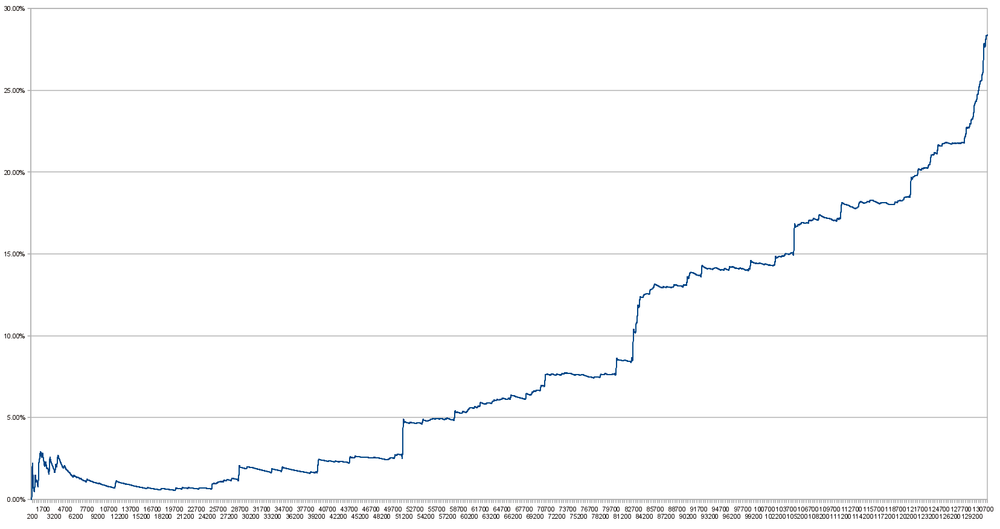

Bitcoin Days Destroyed is a measure of the transaction volume of Bitcoin. (1.1) A bounty for a script to compute the Bitcoin Days Destroyed by the transactions in a block has been awarded. (1.2) Abe is a block chain browser that computes this statistic in real time.
Calculation
Bitcoin days destroyed for any given transaction is calculated by taking the number of Bitcoins in a transaction and multiplying it by the number of days it has been since those coins were last spent.
Example
If someone has 100BTC that they received a week ago and they spend it then 700 bitcoin days have been destroyed. If they take those 100BTC and send them to several addresses and then spend them then although the total transaction volume could be arbitrarily large the number of bitcoindays destroyed is still 700.
Graph of Percentage of Bitcoin Days Destroyed
Percentage of Bitcoin Days destroyed vs block number, as of June 17th 2011. 
See Also
- Abe Alternate Block Explorer
External Links
References
1.1: ByteCoin's Proposal to use Bitcoin Days Destroyed as a measure of transaction volume
1.2: Bounty Award to develop a script to compute the BitcoinDays Destroyed by the transactions in a block.